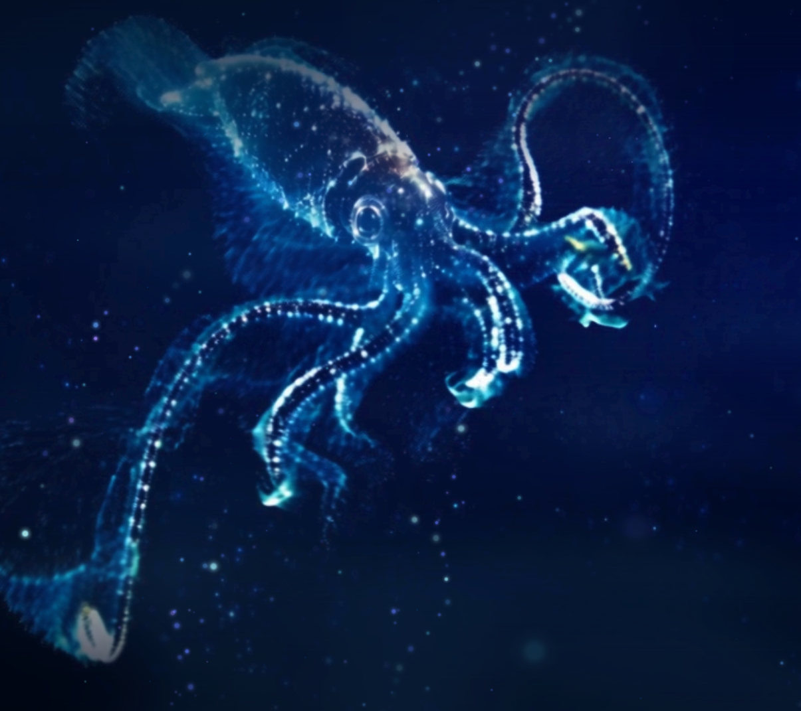

Do
Use traces and habitat clues to identify a hidden creature and explain how sure you are.
OceanX Education
A water sample can hold clues to hidden life. Can you investigate to find out what’s there?
Scientists can collect water or mud from rivers, ponds and oceans and analyse it for DNA traces. A match can provide evidence of a species, including one that is difficult to observe.
eDNAenvironmental DNA: DNA that living things leave in their surroundings.
Understand how scientists detect hidden life in water from the traces it leaves, and use evidence to identify what cannot be seen.
Use traces and habitat clues to identify a hidden creature and explain how sure you are.
Scientists use eDNA to look for signs of living things and study the variety of life in a place. A clue can support an idea without proving it.
Curiosity about hidden life in our rivers, coasts and deep seas, and why protecting water ecosystems matters.
How eDNA works
Every creature sheds DNA into the water and onto the bed below through skin, mucus, scales and waste.
Scientists collect a sample of water or mud, tagging the exact depth and place it came from.
In the lab, they separate DNA from the sample and compare it with a library of DNA from known species.
The experience
Get curious about the life hidden in a few litres of water.
Teacher: Each clip has a question linked to a different part of the learner activity. Play each clip or a relevant excerpt before the linked activity, and pause for students to discuss their observations. Preview clips, captions and running times when planning the lesson.
Watch for: What do you notice about how a sample is collected or handled? Then: Use your observation to help put the survey steps in order in Task 1.
Watch for: How can DNA left in the environment help scientists investigate life? Then: Explain how the evidence differs from seeing an animal, before tackling Task 3.
Watch for: Who takes part in collecting information, and why might sampling in different places be useful?
Then: Use one idea to explain where your group would take samples in Task 4.

Follow the clues like a scientist.
Play eDNA Detectives on your own device, in pairs, or together as a whole class on one shared screen. Examine the eDNA traces in the water and combine them with habitat clues to work out what is hiding below.
Try the paper puzzle. Task 2 on the Learner Activity offers a printed clue puzzle every group can solve with the sheet alone.
As you investigate, ask:
Make sense of the evidence.
In the game and case file, you found one clear answer. Real eDNA is messier. In one famous test, a tank's water showed fish that were never in it, the DNA came from their food. Currents move water, DNA fades, and some species are not yet in the reference library. Complete Task 3, discuss how sure you are and suggest another way to check.
Plan how scientists could use eDNA to check on a real habitat.
In groups of 2–3, use Task 4 on your Learner Activity. Choose one habitat below, either a water body near you or an ocean habitat:
Give a one-minute explanation of your sampling plan, what it cannot tell you, and how your findings could help protect the habitat. Not finding DNA does not prove a species is absent.
eDNA can help scientists study ecosystems while reducing the need to catch animals. Scientists need to think carefully about where they collect samples and what the results can—and cannot—tell them.
Further reading
How scientists detect which species are present from the DNA they shed into the water.
MBARIHow environmental DNA helps scientists study marine life.
Marine Biological AssociationHow a single bottle of seawater can reveal ocean life and help tackle climate change, pollution and overfishing.
eDNA provides clues to the life in an ecosystem. Seagrass and kelp show what it takes to keep them alive. Explore the other experiences.